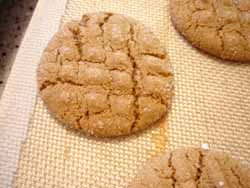
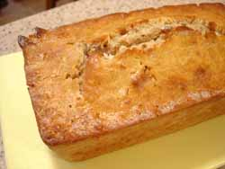

Mom bakes
Some things just go together – mashed potatoes and gravy, tomatoes and basil, summer and grilled foods; the list is endless and you are all probably thinking of much better examples than the few I listed here. I’ve always thought that autumn and gingersnaps and/or molasses cookies had a natural affinity for each other. Maybe it’s because gingery things taste good with cider (although they also taste good with a glass of cold milk) and cider is in season now.
Regardless of the reason, when I thought I was hosting a section of the Rise Above It classes for the next ten weeks I got pretty excited, thinking I would be able to work my way through that store of chocolate chips I recently unearthed, as well as having an excuse just to bake and not eat all the baked goods myself. However, the schedule got changed and though I’m not hosting I still decided to make some cookies and take them with me.

What does this have to do with ginger cookies, you may be asking yourselves? Well, another thing I discovered when I put my kitchen back together recently was a baffling surplus of candied ginger; I seem to remember not being able to find it last winter, so when I did see it in a couple of places I must have kept buying it. I found a recipe on The Baking Sheet called Spiced Up Ginger Cookies and it’s delicious. The only changes I made are that I omitted the ground black pepper, not having any already ground and not really wanting to use fresh-ground pepper-mill pepper, and I was a little leery of the recipe calling for 1 tablespoon of baking soda (!), that seemed like too much to me, so I cut it back to two teaspoons and it seemed fine. Nic suggests chilling the dough before rolling and I concur, it’s pretty sloppy when you first mix it up, and I think it would be difficult to roll into balls without chilling first.

The second thing I baked this week was Bill Granger’s Coconut Bread from The Wednesday Chef. I was quite excited to make this, as I have really learned to love coconut in the past few years and Luisa’s description had my mouth watering. I had a friend coming over for coffee Friday morning so it seemed like a good time to try it. But I don’t know if it’s because I added 1/2 teaspoon salt (no salt at all in the recipe, including unsalted butter) or because I kept opening the oven to check for doneness and in my impatience just possibly took the bread out a few minutes too soon, or maybe over-mixed the batter before baking, but my finished product was a little disappointing. Yes, the smell was wonderful, and yes, it was sweet and subtle at the same time, but mine came out a little tough and rubbery and just kind of pedestrian. But I’m chalking it up to user error on my part, especially now that I’m writing this, I think I should give the recipe a second shot. I still don’t know about that salt, though.
Comments
I’m so glad you’ve discovered a love of coconut. It’s my favourite.
Lovely ginger cookies!
Must be something in the air. In the last four days, I have baked poppy seed bread (twice) and banana blueberry bread and chocolate chip cookies.
hmm, who has a sweet tooth?
Oh, too bad! I definitely think you should try again, but really, do leave the salt out (I know it sounds weird, but the bread doesn’t need it), and keep the oven door closed until the very end, and only mix the batter as briefly as possible! But it sounds like you know all this stuff anyway… ;) good luck. xx
I was guest leading the Rise Above It group your son was at last night. The ginger cookies he brought were very well received. Thanks!
I’m glad you tried the coconut bread recipe. I saw that on Wednesday Chef and have been thinking about it ever since.
Also, I completely broke down yesterday and bought the mixer, so maybe I’ll try the bread when it comes.
Thanks, Ivonne, and I don’t know what stood between me and coconut for so long!
Sogalitno, from the air to my hips! This week alone I’ve gained 3 pounds; at this rate they will have to break down a wall of my house to remove me come spring…
Okay, Luisa, I will trust you on the salt and try again, but from reading your blog I know you are not a salt lover the way I am; that’s one reason I threw some in there. I also know chemical reactions in baking are mysterious and I don’t understand them all.
Thanks, Mac, Calvin said you were “the bomb” as class leader. But as far as the cookies go, my husband thought they were too sweet, essentially forcing me to eat about three dozen of them all by myself.
I’m glad you got the mixer, Kathryn, but do not use it on the coconut bread! See above; overmixing will cause the bread to become tough, so all you need is a few strokes with a wooden spoon to fold the ingredients together.
I had noticed that the bed seemed a little more crowded this week and assumed that it was me.
Honey, the error in your logic is the assumption that my weight gain means that you didn’t gain any. It’s not an either/or proposition, and in fact I’ve been thinking that we have outgrown our double bed.
Add a comment